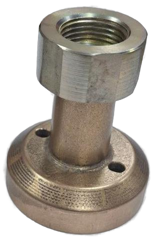

Заправочник ВЗУ ГБО
Артикул: 1177
1 800 ₽
Раздел: Запорная арматура СУГ · АГЗС
Наличие и сроки — по запросу. Поставляем оригинал и аналоги. Доставка по России.
Описание
Заправочник ВЗУ ГБО — позиция из раздела «Запорная арматура СУГ» для АГЗС. Компания SYNDICAT поставляет оборудование и комплектующие для автозаправочных и газозаправочных станций по всей России. Цена и наличие «Заправочник ВЗУ ГБО» — по запросу: оставьте заявку или позвоните, подберём оригинал или аналог и рассчитаем доставку.